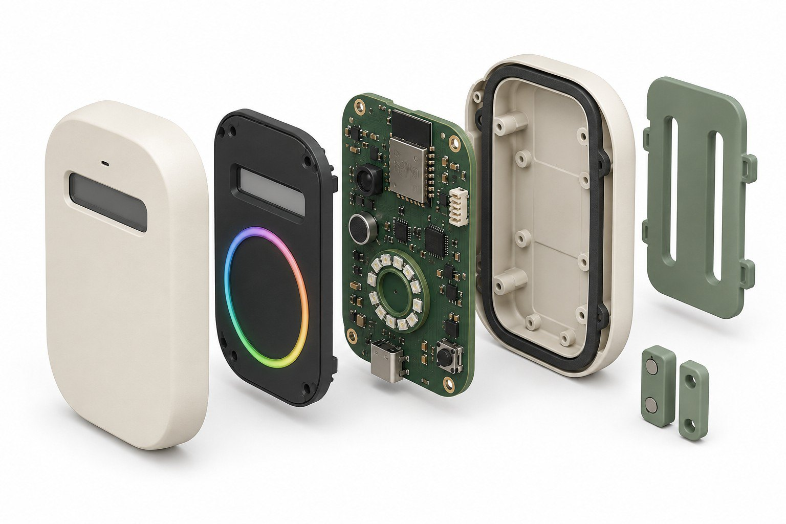

Exploding the score
D = 2P + 3O + 0.25A over a rolling 30-minute window.
RestGuard Demo
This is the same visualisation idea as a lab demo: you can pick up the logic, watch the machine disassemble into counts, and trial the three public states from a desk — before any animal-adjacent pilot.
D = 2P + 3O + 0.25A over a rolling 30-minute window.
Tap events as if you were standing at Enclosure A-03.
Start a rest period or reset after relocation.
Last 30 minutes
Staff interface
The local web app shows the current enclosure state and the counts behind it. It does not store audio, images or visitor identities. Authorized staff can start a manual rest period, reset after relocation, and later configure thresholds.

From demo to bench
Portfolio prototype → ESP32 bench build → 3D-printed appearance model → supervised pilot. Estimated concept BOM about $115 CAD, excluding labour. A production life-cycle assessment is future work.
Inspect the sensing board